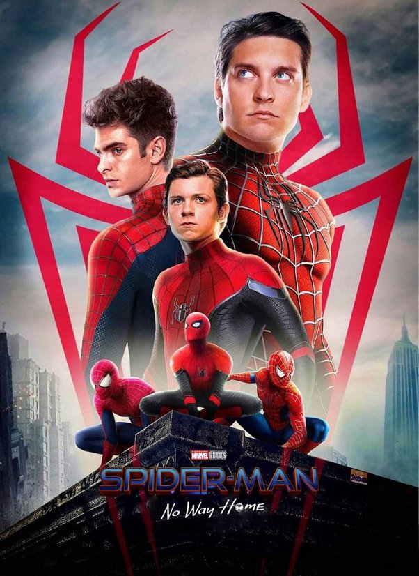

Atividades: Ator, Produtor de set, Produtor Executivo.
Nome de nascimento: Thomas Stanley Holland.
Nacionalidade: Britânico.
Nascimento: 1 de junho de 1996 (Londres, Reino Unido).
Idade: 26 anos.
Thomas Stanley “Tom” Holland é um ator, dançarino e dublador britânico.É mais conhecido por interpretar Peter Parker / Homem-Aranha no Universo Cinematográfico Marvel e Nathan Drake em Uncharted:Fora do Mapa.

Atividades: Atriz, Produtora Executiva.
Nacionalidade: Americana.
Nascimento: 4 de dezembro de 1964 (Nova York, EUA)
Idade: 57 anos.
Marisa Veriga Tomei é uma atriz estadunidense de origem italiana, vencedora do Oscar de melhor atriz coadjuvante pela atuação em Meu Primo Vinny.

Atividades: Atriz, Produtora, Coprodutora.
Nome de nascimento: Zendaya Maree Stoermer Coleman.
Nacionalidade: Americana.
Nascimento: 1 de setembro de 1996 (Oakland, Califórnia, EUA).
Idade: 25 anos.
Zendaya Maree Stoermer Coleman, conhecida como Zendaya, é uma atriz, cantora e compositora norte-americana, que ganhou notoriedade por seus trabalhos no Disney Channel, como Rocky Blue na série Shake It Up e K.C. Cooper em K.C. Undercover.

Atividade: Ator.
Nacionalidade: Americano.
Nascimento: 9 de outubro de 1996 (Honolulu, Havaí, Estados Unidos).
Idade: 25 anos
Jacob Batalon é um ator americano-filipino. Ele fez sua estreia como ator em 2016 no filme North Woods como Cooper; e ficou conhecido pelo papel de Ned Leeds nos filmes Spider-Man: Homecoming, Spider-Man: Far From Home e Spider-Man: No Way Home, do Universo Cinematográfico Marvel.

Atividades: Ator, Produtor Executivo, Produtor.
Nome de nascimento: Benedict Timothy Carlton Cumberbatch.
Nacionalidade: Britânico.
Nascimento: 19 de julho de 1976 (Londres, Inglaterra).
Idade: 45 anos.
Benedict Timothy Carlton Cumberbatch é um ator britânico mais conhecido pelos seus papéis como Sherlock Holmes na série de televisão Sherlock da BBC e como Stephen Strange/Doutor Estranho no Universo Cinematográfico Marvel

Atividades: Ator, Diretor, Produtor Executivo.
Nome de nascimento: Jonathan Kolia Favreau.
Nacionalidade: Americano.
Nascimento: 19 de outubro de 1966 (Queens, Nova York, Nova York, EUA).
Idade: 55 anos.
Jonathan Kolia "Jon" Favreau é um ator, diretor, comediante e argumentista americano. Seus trabalhos mais notáveis são sua participação como ator e diretor nos filmes Iron Man, Iron Man 2 e Iron Man 3 como diretor dos dois primeiros filmes e na atuação como Happy Hogan, guarda-costas e motorista de Stark.

Atividades: Ator, Produtor Executivo, Produtor.
Nome de nascimento: Eric Marlon Bishop.
Nacionalidade: Americano.
Nascimento: 13 de dezembro de 1967 (Terrell, Texas, EUA).
Idade: 54 anos.
Eric Marlon Bishop mais conhecido por Jamie Foxx, é um ator, produtor, roteirista, cantor e comediante norte-americano. É conhecido principalmente por atuar como Ray Charles no musical "Ray" e como Django no filme "Django Livre", de Quentin Tarantino.

Atividades: Ator, Coprodutor, Produtor Associado.
Nome de nascimento: William Dafoe.
Nacionalidade: Americano.
Nascimento: 22 de julho de 1955 (Appleton, Wisconsin, EUA).
Idade: 66 anos.
William James "Willem" Dafoe é um ator americano, com atuações nos filmes Platoon, Speed 2: Cruise Control, Homem-Aranha e Mr. Bean's Holiday. Também atuou na comédia The Life Aquatic with Steve Zissou e deu voz ao personagem Gill no filme de animação Finding Nemo.

Atividades: Ator, Cantor, Produtor.
Nome de nascimento: Rhys Owain Evans.
Nacionalidade: Britânico.
Nascimento: 22 de julho de 1967 (Haverfordwest, País de Gales, Reino Unido).
Idade: 54 anos.
Rhys Ifans é um ator e músico galês. Seus papéis mais conhecidos são nos filmes Notting Hill, Enduring Love e O Espetacular Homem Aranha.

Atividades: Ator, Produtor Executivo.
Nome de nascimento: Alfredo Molina.
Nacionalidade: Britânico.
Nascimento: 24 de maio de 1953 (Londres, Inglaterra, Reino Unido).
Idade: 69 anos.
Alfred Molina é um ator britânico-estadunidense, célebre por seus papéis em Raiders of the Lost Ark, The Man Who Knew Too Little, Spider-Man 2, Maverick, Species, Not Without My Daughter, Chocolat, Frida, Steamboy, The Hoax, Prince of Persia: The Sands of Time, The Da Vinci Code, An Education e The Sorcerer's Apprentice.

Atividades: Ator, Produtor, Produtor Executivo.
Nome de nascimento: Tobey Vincent Maguire.
Nacionalidade: Americano.
Nascimento: 27 de junho de 1975 (Santa Monica, Califórnia, EUA).
Idade: 46 anos.
Tobias Vincent Maguire, mais conhecido como Tobey Maguire, é um ator e produtor cinematográfico americano que iniciou sua carreira no final da década de 1980. É conhecido por seu papel como Peter Parker / Homem-Aranha na trilogia de filmes Spider-Man de Sam Raimi e em Spider-Man: No Way Home.

Atividades: Ator, Produtor.
Nome de nascimento: Andrew Russell Garfield.
Nacionalidades: Americano, Britânico.
Nascimento: 20 de agosto de 1983 (Los Angeles, Califórnia, EUA).
Idade: 38 anos.
Andrew Russell Garfield é um ator anglo-americano. Nascido em Los Angeles, mudou-se a Epsom, no Reino Unido, quando tinha três anos.
